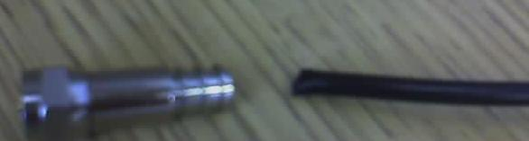

Noise Removal TechniquesNoiseYes, I'm finally done my work! Or so I thought. That was when I learned about the realities of noise. You can't do anything meaningful in software if your data acquisition system is noise-ridden. As I learned, there are many ways noise can get onto your wires. There's the obvious - acoustic noise. But there's also electromagnetic interference, noise in your power supply, and noise (severe) noise from digital switching circuits. Doing something as little as shortening a wire or changing its orientation can change your results. Eventually I found out I had even more serious problems than noise. But I learned some interesting things which I'll share here. At first I thought the problem was acoustic noise from my power supply. I moved it as far away as I could. Then I got one that didn't have a fan in it. That didn't help any. I later realized there was considerable noise from the digital circuits and in the power supply. So the second thing I attempted was making some simple filters with capacitors and resistors. I even tried an active filter (a second order Butterworth). None of that helped much. I was given some ferrite core chokes (essentially an inductive filter) that clip around cables. They didn't help any. I believe they only work at really high frequency (like a few hundred megahertz). Eventually I discovered that the noise had a very large bandwidth and that some of it was actually in the power line itself. I was given a device that is essentially a large expensive filter that plugs directly into the power outlet. It's usually used to test for noise in equipment. That helped a little. Finally I was told I needed high frequency capacitors and inductors. It turns out that the cheap capacitors you usually get from the instrument room effectively become inductors at high frequencies (and the elecrolytic ones only work for a few kilohertz). I bought a few filters and some 'high frequency' capacitors. There was no data sheet. The capacitors didn't help much. The filters did help a little when I cascaded them and then put a capacitor on the end. (For some reason the filters seemed to amplify noise a little at low frequencies.) None of this really mattered anyway. There was a lot of noise being created by the digital circuits on a board which I had no control over. You can of course put bypass capacitors on the power supply going into the board. But ideally you have to place them next to the chip. Another technique is to place lots of small bypass capacitors spread out along the power line. When you do this, they don't have to be right next to the chip. I tried this as well, but nothing I did helped much. You really need the ones that work over a large frequency range. CoaxOne other thing that was suggested to me was to protect signals from EMAG using coaxial cable. This is especially important for low amplitude signals that travel along a long wire (which you should avoid) before being amplified. So I gave it a try (even though I later found out this wasn't my real problem). You can get coaxial cable in various circumferences (it tends to be larger than normal cable) and with different types of shielding. The shield is ground, and the wire running through the middle is the signal. Between the signal cable and the ground shield there is some insulation. The ground material can be made of an aluminum foil or braided wire. It may use both and have one or more layers (called dual or quad shield). I used a (dual) miniature coax with both braiding and foil. You need to be careful about the coax, connectors, and tools you get. The coax is usually named RG-xyz where xyz is some number. (I don't know the meaning.) There are f-connectors (which is what I used), BNC, and RCA. And I believe there are sub-types. Which type you need will depend on the coax and what you're connecting it to. Then there are the many special purpose tools. You can find supplies and tutorials at hometech. I've taken some pictures of my tools. Please forgive the blurriness. The camera on my phone doesn't always work. This first one shows the cable and an F-connector. The cable has to be prepared and inserted into the connector on the right side in the picture. | ||
|  | ||
|
This next one is a stripper for preparing the cable. It has two blades. You put your finger in the hole and wind it in loops around the cable. One of the blades will completely cut through the outer insulation, shielding, and inner insulation leaving only the inner conductor. The second blade should only cut through the outer insulation (farther back from where the first blade cut). You then have to pull back the braiding leaving the foil exposed. Insert the cable into the connector. At this point the inner conductor should make contact with the end of the pin that comes out the other side. And the foil will be touching the long cylinder protruding from the base. You may have to use some force to get it in there. I often had problems with the cylinder tearing away the aluminum foil, leaving the mostly the inner insulation touching the ground connection (cylinder). I also had other problems with getting the blades on the stripper set right. (I suggest you buy a few extra feet of cable.) And the braiding tended to stick out a bit from the back of the connector. Lastly, you should probably check with a multimeter that the pin on the other side is actually connecting with the cable before moving to the last step. | ||
|
You will need a crimping tool to permanently attach the cable and connector. Just place the connector (with the cable in it) into the appropriate hole and force the crimper shut. Once you've done this, you should be able to get the crimper open again. And the cable should be permanently in the connector. The first time I did this, the crimper got stuck and I couldn't get it open (or perhaps I just didn't force hard enough). Those two large screws will let you remove the clamps if the crimper jams. | ||
|
That should be all you need. Good luck. Make sure to get more than you need. And one last thing - If you plan to do any soldering instead of using connectors, be very careful to keep the shield away from the inner conductor. The insulation for the miniature coax that I used is very thin. | ||